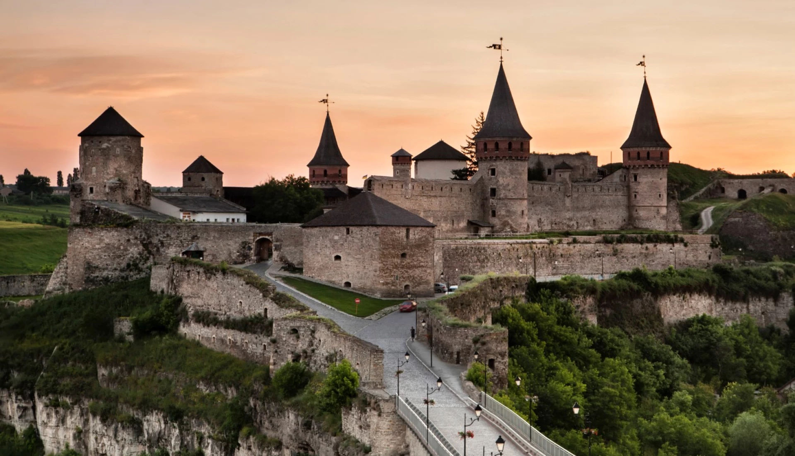

Кам'янець-Подільська фортеця
Історія та факти
Кам'янець-Подільська фортеця — унікальний приклад середньовічної оборонної архітектури. Вона розташована на скелястому півострові, утвореному петлею річки Смотрич, що тече у глибокому каньйоні. Це робило фортецю практично неприступною.
Точна дата заснування невідома, але вважається, що перші укріплення існували тут ще в XI-XII століттях. Сучасний вигляд фортеця набула завдяки литовським князям Коріатовичам та польським королям у XIV-XVII століттях. Вона складається з 11 веж, кожна з яких має свою назву та історію.
Ключові особливості:
- Входить до списку "Семи чудес України".
- На території фортеці знаходиться боргова яма та експозиції середньовічної зброї.
- Знаменитий Замковий міст, що веде до фортеці, є унікальною інженерною спорудою.
- Щороку тут проходять фестивалі історичної реконструкції та повітроплавання.